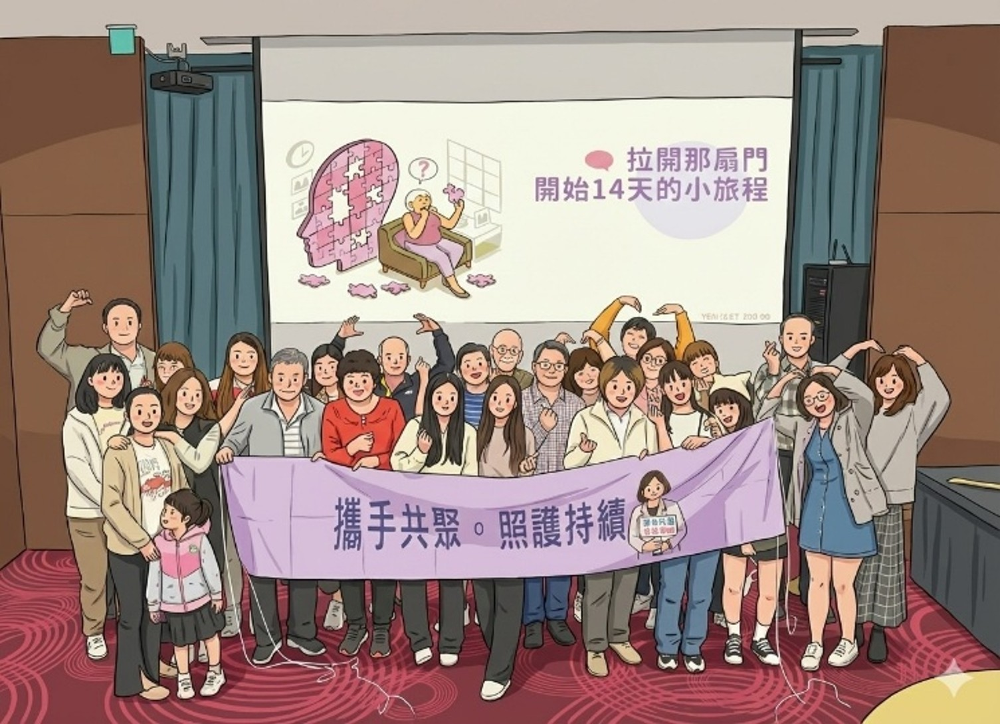

14天一次的小旅行
ATT School 是針對 ATT 療法的病友陪伴計畫，Lecanemab 兩週一次的輸注頻率就像14天一次的小旅行。為阿茲海默症患者及家屬／照護者創造共同出遊的機會。
我們相信：藉由聚會的分享——在陪伴阿茲海默症孤獨的路途上，走向彼此理解、共同前行的群體力量。
在 ATT School 的陪伴下，走過三個階段的病友旅程。
這個階段像是一趟「14 天一次的小旅行」。每一次療程、每一次回到醫院輸注治療，都不是為了立刻變好，而是慢慢停格在現在的位置。
進入進階階段後，療程不再只發生在課室或諮詢中，而是開始改善生活、運動、飲食習慣。「有用」不是取悅他人，而是自己開始能派上用場。
來到畢業生階段，意味著 ATT 療程即將完成，但人生並沒有停止。不同的是——你已經不是原來那個沒有選擇的人。
